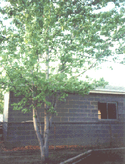
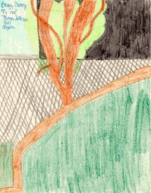

Student Project
Brandy


My favorite tree is a red maple. My dad planted it when it was two inches high. My neighbor said that it would not grow. It is still growing twelve years later. It is 35 feet high. My tree is very comfortable. When I sit on a branch, I like to hear the wind rustling the leaves. I feel like an ant standing next to my tree.
-Brandy
c. Brandy
Grade 4
Thomas Jefferson Magnet School
Euclid, Ohio USA
"My Tree"
Crayon on Paper 8"X10"
Pear
Latin Name: TBA
Age: 12 years old
Circumference at 54 inches from the base: TBA
Location: Euclid, Ohio USA
 Return to Main Page
Return to Main Page
June Julian jj68@nyu.edu